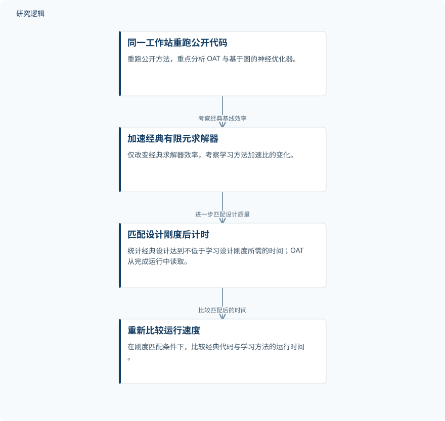

摘要解读
经典基线如何影响拓扑优化中的机器学习加速宣称
How the Classical Baseline Shapes Machine-Learning Speed Claims in Topology Optimization
解读更新 2026-11-10 15:35 · 依据公开摘要整理，未核验全文细节
机器学习做拓扑优化究竟快多少，取决于与什么经典代码比较，以及双方是否达到相当的结构刚度。这项研究重新运行已公开的方法，说明经典基线的实现效率与设计质量匹配，会显著改变加速结论。
文章目录
比速度之前，先对齐结构刚度
拓扑优化通过配置材料，让结构在给定载荷下抵抗变形。机器学习方法常报告相对经典非学习优化的大幅加速，但摘要指出两种可能的夸大来源：经典代码本身偏慢，或者学习方法生成的结构刚度较低。因此，运行时间不能脱离设计质量单独比较。
重跑公开代码，再按刚度匹配计时
作者在同一台工作站上重跑了八种方法的公开代码，重点研究生成设计的扩散模型 Optimize Any Topology（OAT），以及一种基于图的神经优化器。研究先仅加速经典代码中的有限元求解器，再考察加速比如何变化。
随后，作者统计经典代码达到不低于学习方法设计刚度时所需的时间；对于 OAT，这一时间点从已完成的运行中读取。作者还给出比较流程与最低报告要求，包括经典代码、硬件、设计质量、计时包含的环节，以及数据生成和训练成本。
依据摘要整理的速度比较流程


仅概括摘要明确报告的重跑、经典求解器提速与刚度匹配环节，不代表论文原图或完整实验配置。
下载 SVG图示关系说明
实线表示相邻阶段的信息流，虚线表示跨阶段联系或反馈。
同一工作站重跑公开代码 → 加速经典有限元求解器：考察经典基线效率；加速经典有限元求解器 → 匹配设计刚度后计时：进一步匹配设计质量；匹配设计刚度后计时 → 重新比较运行速度：比较匹配后的时间
基线提速与质量匹配，显著改写加速比
仅加速经典有限元求解器，就使两种重点方法的加速比最多缩小至原来的二十分之一。对 OAT，已发表计时意味着在 256 × 256 网格上达到 134 倍加速，而本研究匹配后的单设计比较得到 1.5–3.5 倍加速。
在匹配刚度后，基于图的优化器在全部六个二维问题上都慢于经典代码。其余六种方法中，两种保留了速度优势，一种优势缩小，一种由快转慢，另两种无法比较。结果并非一致否定学习方法，而是呈现出不同方法对比较条件的不同反应。
探索性审查也显示，证据判断存在分歧：针对随机抽取的开放获取文章中的 28 项速度比较，语言模型认为其中 8 项缺乏设计质量相等的证据，作者自行审查则计为 11 项。这是证据充分性的判断差异，不等于相应比较已经被证明无效。
这些结果的适用边界仍需查阅正文
仅凭摘要，无法判断各方法的测试样本构成与数量、载荷和边界条件覆盖、计时重复性，以及训练成本如何进入具体比较；也无法确定两种方法不可比较的原因。这些属于摘要未交代的信息，不能据此认定论文没有开展相关分析。
摘要明确报告了同一工作站上的重跑和六个二维问题中的结果，但不足以判断结论能否推广到其他硬件、三维问题或更广泛的设计任务。文献审查被定位为探索性工作，且判断者计数不同，不宜直接外推为整个领域的比例。
阅读启发：把加速倍数还原为比较条件
阅读启发：评估结构生成式设计的速度声明时，可优先追问经典求解器是否得到合理优化、刚度是否匹配，以及计时是否包含数据生成和训练。进一步阅读本文时，值得关注这些条件如何落实到比较流程，而不是只记住一个加速倍数；语言模型审查与人工审查的分歧，也提示证据判定标准本身需要明确。
以上为本站阅读启发与建议，不是论文已验证的结论。